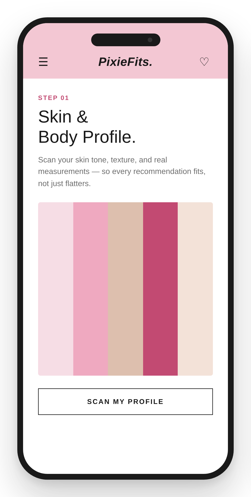
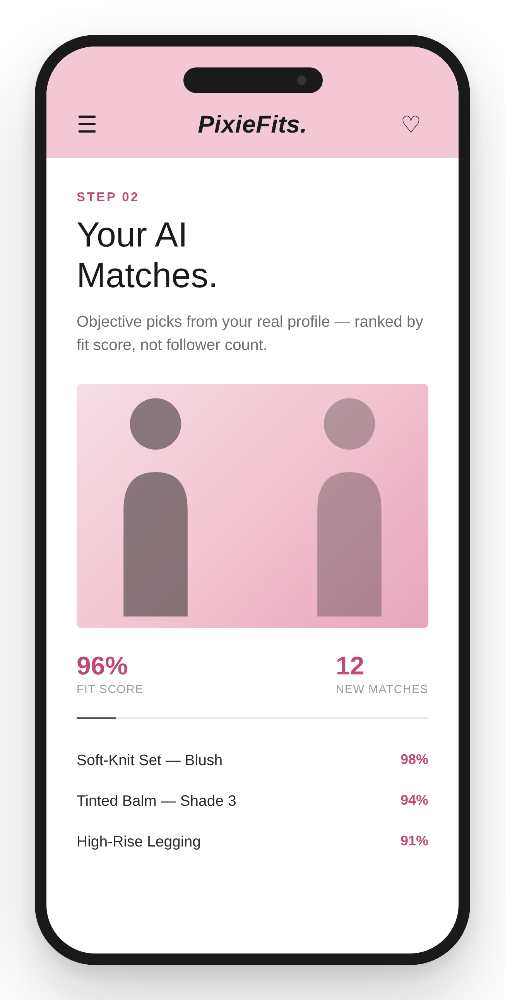
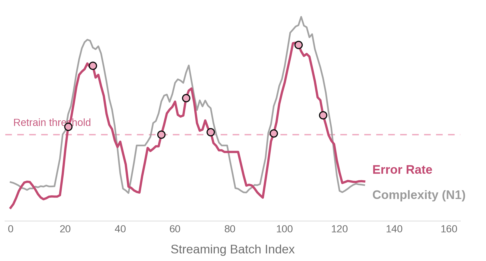
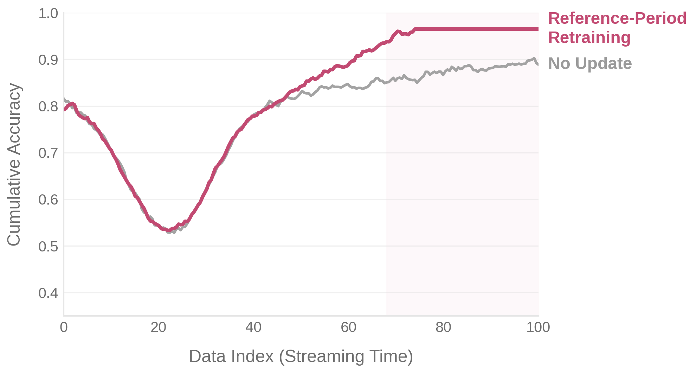

I'm an AI Product Manager and builder based in Seoul, majoring in Mathematics & Industrial Engineering at Sungkyunkwan University. I'm drawn to problems where messy, real-world signals — body measurements, skin data, sensor logs, error codes — have to become something people can actually use and trust.
I don't just plan products; I build them — from data pipelines and AI modules to the interfaces people touch.
Python · R · Microsoft Office · Data Analysis · Statistical Modeling
Isolation Forest · Predictive Maintenance · Statistical Forecasting
Process Optimization · UX Writing · Quantitative Business Analysis
React · TypeScript · Tailwind CSS · Firebase · Framer Motion
Fashion and beauty grew into a massive industry — but two things stayed broken.
Influencer-driven marketing on TikTok and Instagram floods the market, making it genuinely hard to find what actually fits YOUR body and skin.
There's no Reddit-style vertical where fashion & beauty-obsessed women can go deep on honest fit and product reviews together.
Hyper-personalized AI curation with the marketing noise stripped out — anchored by a community built around it.
AI Photobooth + sport-specific style recommendations act as a hook — driving organic, self-directed sharing.
Objective matching from real body measurements and AI-scanned ingredient labels — not influencer picks.
Users with similar body types and skin concerns curate and discuss items together, Reddit-style.
Two taps from real body data to a fit you can trust.


Benchmarked Airbnb & Duolingo to design a Funnel / Retention / Cohort analytics architecture with an offline-first event tracking queue.
DAU, MAU, conversion rate, and AI recommendation CTR — monitored live, not guessed at.
React · TypeScript · Firebase Firestore (flat NoSQL schema) · Tailwind CSS · Framer Motion.
49.2% reduction in process delays after introducing AI-based anomaly detection and optimized operations.
Built the ML-based module for predictive fault detection and real-time response, end to end.
Connected MES, RTD, MCS & ACS to keep operational monitoring seamless across systems.
Handled data preprocessing and algorithm selection, evaluating both anomaly detection and predictive-maintenance performance.
A framework for streaming ML models: catch when the data has genuinely shifted, and decide what to do about it.
50,831 rows · 128 features
824,364 transactions · 21 features
61,102 streaming records
Error rate and complexity move together — until a batch breaks that relationship. That's the retrain signal.

MAPE improvement (1.67% → 0.39%) after switching the highest-drift batch to reference-period retraining.

Paired error-rate tracking with problexity complexity measures (C1, C2, N1).
Flagged batches where the error–complexity correlation breaks down.
Used KNN, PCA and distribution tests (KS, PSI) for targeted retraining.
President/Member · Seoul · 2022 – 2025
Led a university tennis organization of 50+ members, tailoring my leadership style to individual strengths across a diverse group. Organized large tournaments and exchange matches to build stronger engagement and collaboration across different age groups.